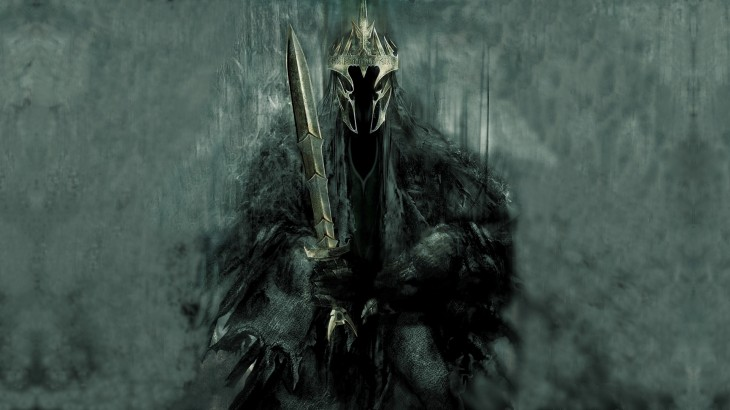

Nazgûl ~ The Ringwraiths
Who were the Nazgûl?
Nazgûl means "ringwraiths" in the Black Speech. The Nazgûl were actually the original great warriors and lords of Men, who got nine Rings of Power during the initial division. This made them almost immortal, but they gradually fell under the power of the One Ring and became ghosts and slaves of Sauron. Known as Ringwraiths from that point, they were visible only to those who could see into the world of wraiths.
The primary weapon of the ringwraiths was, above all other, the paralyzing horror caused by their mere appearance. When in contact with the living, they wear black coats with hoods and black boots to hide their invisibility. They also use bewitched blades as weapons, such as the Morgul-knife, with which the Witch King injures Frodo on the Weathertop and which can transform a living person into a wraith.
When the Last Alliance defeats Sauron towards the end of the Second Age, the Ringwraiths go into hiding. Their Master is greatly weakened after this defeat and the loss of the One Ring, and the Nazgûl are also in hiding. Their seat is the city of Minas Morgul, which they conquer in TA 2002. From there they prepare for Sauron’s return and reappear for the first time in TA 2251.
The Witch-King
The Lord of the Nazgûl, also referred to as the Witch-king of Angmar, was the leader of the Nazgûl and Sauron’s deputy in the Second and Third ages; he was the most powerful and the most feared among the Ringwraiths, with Tolkien describing him as follows:

Upon it sat a shape, black-mantled, huge and threatening. A crown of steel he bore, but between rim and robe naught was there to see, save only a deadly gleam of eyes: the Lord of the Nazgûl… now he was come again, bringing ruin, turning hope to despair, and victory to death. A great black mace he wielded.”
~ The Return of the King, Book Five, Chapter VI, “The Battle of the Pelennor Fields”~
His true identity is unknown, but he is still among the Nazgûl whose name we know. Once a king of Men, possibly of the Númenórean heritage, he was corrupted by one of the nine Rings of Power given to the masters of Men by Sauron, after which he became a wraith in the Dark Lord’s service. After Sauron’s first defeat in the War of the Last Alliance, the Witch-king remained hidden for over a millennium, but eventually reappeared to establish the evil Angmar Empire, where he was nicknamed “the Witch-king” and ruled for over six hundred years until the Númenórean line of the kings of Arnor was ruined.
He returned to Mordor to aid Sauron’s return to power, then took the Gondorian citadel of Minas Ithil and restored it as the fearsome Minas Morgul, which became the capital of the Ringwraiths, and also wiped out the lineage of the kings of Gondor there. He led Sauron’s armies in the War of the Ring, stabbed Frodo Baggins in the early months of Frodo’s adventure from the Shire to Rivendell on Weathertop, as well as besieged and smashed the gates of Minas Tirith and killed King Théoden of Rohan in the Battle of the Pelennor Fields. In his hour of triumph on the Pelennor Fields, however, at the end of the War of the Ring, he was killed by the hobbit Meriadoc Brandybuck (Merry) and Éowyn, Théoden’s niece.
“The winged creature screamed at her, but the Ringwraith made no answer, and was silent, as if in sudden doubt. Very amazement for a moment conquered Merry’s fear. He opened his eyes and the blackness was lifted from them. There some paces from him sat the great beast, and all seemed dark about it, and above it loomed the Nazgûl Lord like a shadow of despair. A little to the left facing them stood she whom he had called Dernhelm. But the helm of her secrecy had fallen from her, and her bright hair, released from its bonds, gleamed with pale gold upon her shoulders. Her eyes grey as the sea were hard and fell, and yet tears were on her cheek. A sword was in her hand, and she raised her shield against the horror of her enemy’s eyes.
Éowyn it was, and Dernhelm also. For into Merry’s mind flashed the memory of the face that he saw at the riding from Dunharrow: the face of one that goes seeking death, having no hope. Pity filled his heart and great wonder, and suddenly the slow-kindled courage of his race awoke. He clenched his hand. She should not die, so fair, so desperate! At least she should not die alone, unaided.
The face of their enemy was not turned towards him, but still he hardly dared to move, dreading lest the deadly eyes should fall on him. Slowly, slowly he began to crawl aside; but the Black Captain, in doubt and malice intent upon the woman before him, heeded him no more than a worm in the mud.
Suddenly the great beast beat its hideous wings, and the wind of them was foul. Again it leaped into the air, and then swiftly fell down upon Éowyn, shrieking, striking with beak and claw.
Still she did not blench: maiden of the Rohirrim, child of kings, slender but as a steel-blade, fair yet terrible. A swift stroke she dealt, skilled and deadly. The outstretched neck she clove asunder, and the hewn head fell like a stone. Backward she sprang as the huge shape crashed to ruin, vast wings outspread, crumpled on the earth; and with its fall the shadow passed away. A light fell about her, and her hair shone in the sunrise. Out of the wreck rose the Black Rider, tall and threatening, towering above her.
Éowyn: ~~ "Be gone, foul dwimmerlaik, lord of carrion! Leave the dead in peace!"
Nazgûl: ~~ "Come not between the Nazgûl and his prey! Or he will not slay thee in thy turn. He will bear thee away to the houses of lamentation, beyond all darkness, where thy flesh shall be devoured, and thy shriveled mind be left naked to the Lidless Eye."
Éowyn: ~~ "Do what you will, but I will hinder it, if I may."
Nazgûl: ~~ "Hinder me? Thou fool. No living man may hinder me!"
Éowyn: ~~ "But no living man am I! You look upon a woman. Éowyn I am, Eomund's daughter. You stand between me and my lord and kin. Be gone, if you be not deathless! For living or dark undead, I will smite you, if you touch him."
With a cry of hatred that stung the very ears like venom he let fall his mace. Her shield was shivered in many pieces, and her arm was broken; she stumbled to her knees. He bent over her like a cloud, and his eyes glittered; he raised his mace to kill.
But suddenly he too stumbled forward with a cry of bitter pain, and his stroke went wide, driving into the ground. Merry had stabbed him from behind. His sword – an enchanted Barrow-blade, one of the few weapons that could have penetrated his defences – sheared through the black mantle, and passed up beneath the hauberk and pierced the sinew behind his mighty knee, breaking the spell binding his undead flesh to his will.
‘Éowyn! Éowyn!’ cried Merry. Then tottering, struggling up, with her last strength she drove her sword between crown and mantle, as the great shoulders bowed before her. The sword broke sparkling into many shards. The crown rolled away with a clang. Éowyn fell forward upon her fallen foe. But lo! the mantle and hauberk were empty. Shapeless they lay now on the ground, torn and tumbled; and a cry went up into the shuddering air, and faded to a shrill wailing, passing with the wind, a voice bodiless and thin that died, and was swallowed up, and was never heard again in that age of this world.
And there stood Meriadoc the hobbit in the midst of the slain, blinking like an owl in the daylight, for tears blinded him; and through a mist he looked on Éowyn’s fair head, as she lay and did not move; and he looked on the face of the king, fallen in the midst of his glory. For Snowmane in his agony had rolled away from him again; yet he was the bane of his master.
The prophecy made by Glorfindel at the Battle of Fornost centuries before was fulfilled, as Éowyn was a woman. The Witch-king's death changed the tide of the battle, and ultimately the outcome of the War.”
~The Return of the King, Book Five, Chapter VI, “The Battle of the Pelennor Fields”~
Black Speech
The Black Speech was created by Sauron during the Dark Years to be the sole language of all the servants of Mordor, replacing the many different varieties of Orkish and other languages used by his servants. When Sauron was overthrown at the end of the Second Age the ancient "pure" form was forgotten by all but the Nazgûl.
When Sauron returned it was once again made the official language of Barad-dûr. However, a more "debased" form was used by the soldiery of Barad-dûr at the end of the Third Age. The only example given of "pure" Black Speech is the inscription upon the One Ring:
Ash nazg durbatulûk, ash nazg gimbatul,
ash nazg thrakatulûk, agh burzum-ishi krimpatul.
These are the first two lines from the end of a verse about the Rings of Power.
When translated into English, these words form the lines:
One Ring to rule them all, One Ring to find them,
One Ring to bring them all and in the darkness bind them.
Commenting on the Ring Inscription, Tolkien explains:
"The Black Speech was not intentionally modeled on any style, but was meant to be self consistent, very different from Elvish, yet organized and expressive, as would be expected of a device of Sauron before his complete corruption. It was evidently an agglutinative language, and the verbal system must have included pronominal suffixes expressing the object, as well as those indicating the subject. [...] I have tried to play fair linguistically, and it is meant to have a meaning and not to be a mere casual group of nasty noises, though an accurate translation would even nowadays only be printable in the higher and artistically more advanced forms of literature. According to my taste such things are best left to Orcs, ancient and modern."
~Tolkien linguist Helge Fauskanger has noted a theory proposed by Russian historian Alexander Nemirovski, that the Black Speech, according to the shape of words, agglutination and grammar, shares many similarities with the ancient Mesopotamian language Hurrian.~
"Top of page"